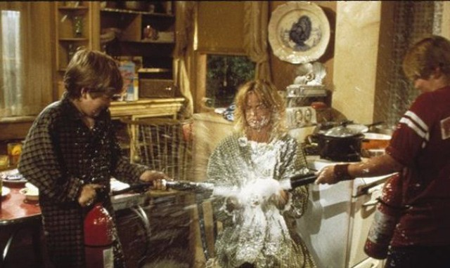

Here we continue with periodic questions that I ask the Domain Commander for clarification on. This is part 5.
Note: For those of you who are new here, this article continues a Q&A dialog with an extraterrestrial "Commander" and a retired MAJestic operative who is still active with active EBP implants. Heavy stuff. But not for trivial reading. Personally, I think girls, cats, and food are far more interesting. But, that's me, don't you know.
[13] Question – Can humans overcome a cosmic event
I am still stuck on this… maybe you can just straighten me out without bothering The Commander.
- There is a shared Earth Template, correct?
- We ALL contribute to manifest this Earth with our collective thoughts – a sort of average; correct?
- There would be no physical earth unless we humans will it so; correct?
- There are our individual Pre-birth Templates; correct?
- We purportedly set these before being incarnated into this meat-suit; correct?
As to whether or not we are assisted in these designs or ordered, is debatable – in my opinion – I think that some are ORDERED, like me, and are difficult if not impossible to alter while a human.
Now then, I say the world as we know it will end shortly in a cataclysmic event; you pick: Human-based Thermonuclear Devastation, or Cosmically induced Geophysical Surface Destruction. For either of these to be realized, many, many humans who have contributed to this [current] manifest earth must share that belief/thought.
Is THAT correct?
So, IF we humans came together, in thought, could we overcome even a Cosmic Event, and Save The Earth, so to speak?
I am asking if there are controls in place, entities in place, that would disallow the Earth’s destruction even if the vast majority willed it so. Does the Cosmos trump The Old Empire, so to speak. Sorry, but I thought that The Commander skirted this issue earlier.
Yes. You are correct in every statement. However, things are not all that simple and the "devil is in the details" as is often said. The mini-universe known as the MWI (or the "reality universe") is a bubble universe that contains the stars and solar systems of the "Main Universe". Within this mini-universe are it's own laws, and rules and organizational parameters that are similar to the "Main Universe", but differ in many ways. For instance, The "Reality Universe" limits or suppresses the power of thought to a far greater degree from that of the "Main Universe". If a IS-BE is thinking in the "Main Universe" the thoughts would create fast and easy manifestations due to the parameters and rules of the "Main Universe". But those rules and systems are suppressed or absent in the "Reality Universe". It's not only that [1] there is memory amnesia, and [2] a containment field, but [3] there is a complete suppression of IS-BE actuation of thoughts. Along with these modifications, replacement rules and laws of the "Reality Universe" and the DNA make up of the "skin suits" of the inmates (on both the physical and the non-physical realities) are such that periodic social purging of planetary and human life occurs. This is programmed into the Prison Complex intentionally. Once the Domain took over this region of space and the Prison Complex, a number of systems stopped working, others took on a life of their own, and as we have recently flushed-out, certain entities have (for their own purposes) took over various functions and systems. Thus the intended operation of the "Reality Universe" is broken. It operates differently than what was originally intended. Nor is it defaulting to the parent "Main Universe". The only way there is any access to that state of being is through gated portals and transit bubble systems. (LD and OBE are special cases of hybrid bubble-systems that transit through portal systems.) So presently, the worst aspects of the "Reality Universe" is manifesting. The thoughts of IS-BE entities in skin-suits are being manipulated by selfish and malevolent entities to act as some kind of thought amplifier for personal gain. This is successfully altering the shared templates (sic.) because the main original "Reality Universe" systems are not fully functional and damaged in various ways. To answer the question as to if well intentioned groups of skin-suits, acting and conjoined together can alter the fabric of the MWI in the "Reality Universe" at this present time, the answer is yes. However, if other larger groups are doing the same thing in a countering manner than the effect is the sum total or both, and the longest most powerful group would have the greatest apparent manifestation of results. If... 5 skin-suits think about peace and tranquility. 50 skin-suits think of crime, destruction and pillage. Then, the highest probability of manifestation will be via the largest concentration of thoughts (all things being the same). The way to get around this apparent limitation is to localize; geographically your range of effect. In short, you create a bubble of influence to your immediate region. That enables a moderate work around to this situation. Thus, if... 5 skin-suits think about peace and tranquility located in a small community, While... 50 skin-suits think of crime, destruction and pillage in the entire nation. Then... There is a reasonable, and higher than normal, chance that the bubble of influence will be created by the five IS-BE skins suits, and will coexist with the influences of the 50 that are diluted over a wider geographic area. That is the primary advised "work around" system to overcome the onslaught of vault 7 manipulation media techniques for mind control efforts. The well intentioned and alert inmate will note that it is easy to create such a positive environment by constructing positive thoughts all around them in many, many ways. It is no accident that MM has been promoting this methodology to all irregulars and lurkers.
[14] Question – Domain Military Strategy
Is China’s military doctrine spiritual brothers with the Domain? I mean do they wage actual total war, take no prisoners stuff like Genghis Khan? I mean totally peaceful but when they decide that the world is better without you, then you really better just run.
I see the Domain as really peaceful but perhaps they can be absolutely brutal towards their enemies if there were no possibility of rehab?
- It’s something like the white, red, and black tents of Genghis Khan. You only want to see the white tents and surrender. By the time you get to the red tents, all the men would have to die. Black tents, well men, women, and children die. No animal left. Even the stones are gone. You will pray for a kind death when the black tents come up.
- The white tents come up first. There is a short period of time. Refuse the white and the red tents come up. Then your choice is to let the men all do to their deaths. Or face a real Final Solution where everything is destroyed. You do not want the black tents.
I don’t know if you can draw the same conclusions as I do. But they scare the heck out of me. I think the Domain is low key trying to tell us something through MM. Our host himself may not even know it so by implication no one in knows.
…
MM comments: I had a VERY STRONG urge, almost like my entire arms and legs were filled with termites to write / pen the following article. Funny that you should mention Genghis Khan.
What I can say is that The Domain is “Yin and Yang“. I have been having such strong thoughts about China’s military doctrine and the military ruthlessness of Genghis Khan. You do know that the vast bulk of the military sappers under Genghis Khan were from the captured Chinese territories.
I would say that they are being peaceful now. Very, very peaceful. But if the time comes, they unleash Hell on Earth at a level of ferocity that is beyond comprehension.
But let’s ask the question…
Is China’s military doctrine spiritual brothers with the Domain? I mean do they wage actual total war, take no prisoners stuff like Genghis Khan? I mean totally peaceful but when they decide that the world is better without you, then you really better just run.
There will be no mercy. The Earth is a Prison Planet, and a war (whether programmed as part of the "Old Empire", or intentionally set in place by "old Empire" embeds) makes no difference. It is a "Prison Riot" and will not be allowed. We will use every power, every technology, every "trick in the book" to re-balance things and correct the imbalance. We are the caretakers of this region of space. We take that role seriously.
I am curious. Like how?
The Domain is very capable. (Images of scenes of soldiers vomiting at their battle stations... Images of gun barrels warping. ... Images of radios, video monitors and equipment going dead.) (Images of scenes from the Star Trek series showing "the Borg" teleport onto a ship and take it over... Images of Wizards and Warlocks casting magic spells and people melting... )
(...Images of a Domain soldier "walking into" one of the bodies of a general and ordering his military to destroy each other... Images of a 1950's movie showing flying saucers disintegrate entire buildings... ) (Images of voice overs and soldiers following the insane orders... Images of ballistic missile codes being changed...)
(...Images of a political leader sleeping in bed beside his wife and the wife starts tearing at him with her fingernails like a wild cat blood everywhere... Images of people on the New York City streets walking and then collapsing dead all at once like some kind of science fiction movie...) (...Images of soldiers shooting each other from the movies scene in "Jacobs Ladder... Image from the movie "Scanners" where the guys head explodes.)
Scanner’s movie gif…
So, The Domain would do all the work. The Domain would do all the fighting. Not China, nor Russia…?
No. We are a garrison force. We are not equipped for a full military invasion. Were we to conduct a full invasion, the entire planet would be purged. Instead, a war would occur on human terms, but The Domain would make sure that China (which is a Domain asset) be protected. The Domain would direct the strategy, make sure that various systems work and severely retard and handicap those who have attacked us. We can guarantee that there would be a very quick and lethal encounter against any that would assault The Domain or it's elements. Already systems are in place to suppress the desire to generate a major conflict against China. Within a year or two, a conflict will be the last thing in the minds of the United States leadership. Everyone will notice that something is amiss by the end of this year (2022), and it will be quite obvious by the end of the next (2023). Most sensible humans would come to the conclusion that a war would be ill advised. You will write about it tomorrow. (I will post it tomorrow. Posted and found HERE. -MM) However, none of this guarantees anything. There are massive forces that need to be tamed / suppressed in this regard.
Can you please elaborate on your statement that “nothing is guaranteed”.
We are anchoring and manipulating the constraints of the social compacts inherent in the human communities that occupy the General Population in the "Reality Universe". It is desirable that there be "small bads" instead of "big bads" in the changes that are manifesting. We work on various systems and in various levels. Our projections are on track, but experience has indicated time and time again that things tend not to follow the ideal trend line no matter how carefully and well-intentioned it is positioned. To this end, we provide a wider scope and flexibly in manifested outcomes.Imagine
[15a] Question – Cat concerns
Ugh, I’m really warring with myself about asking another question, but I do need a little guidance since the Commander knows so much about cats.
So how can I best support my eldest cat, after what I think was a stroke on Christmas Eve? She seems so lost now.
MM Comments – This answer was answered by PL on the forum. He offered some good strong medical suggestions and advice. In general, the Domain Commander is an extraterrestrial IS-BE with a great deal of experience and knowledge. However, as much as we might desire help and compassion, I don’t know just how helpful his / it’s help would actually be.
Question posted…
Your little buddy is fine. The physical body is distressed, but the consciousness is fine. There is an event associated with this situation that is key to your template (sic.). Do not be distressed about it. All is proceeding as it should. Comfort your little buddy, take care of him. Provide him comfort, care, kindness and warmth. You know what is going on. Do not doubt your intuition. (One day later, added the following. -MM) Physical body or not, his consciousness will migrate around yours. You two both have a strong quantum connection and the associations over time (years?) have been very good, strong and positive ones (for the most part) and you two pals /buddies / friends will continue regardless of the state and conditions of either of your two physical bodies. You and your buddy are IS-BE. You are not your skin-suits. Your relationship goes deeper and far beyond what you sense right now. Do not be concerned or too emotional over the changes. Your pal does not sense the physical distress like you assume. It's processed differently for him.
[15b] Question – Karmic / quantum entanglements
And my second question, after learning about the karmic/quantum ties we may have with those close to us–I’d appreciate some advice for my situation, particularly with T.
I feel like every place I’ve looked for answers has given me bad information, and I’m not even sure what to say in my Intentions. This could impact my role as an Irregular so it’s important.
Are there any suggestions that can be provided to the questioner about this issue?
Human skin suits, inside of the "reality universe" collect quantum associations much more aggressively than IS-BE entities that exist in the "Main Universe" outside. This quanta collects like dust on a window. In the normal course of life, the inmate skin-suit needs to periodically cleanse itself. Shake off "the dust", and refresh. This is done through contemplation, fresh air, isolation and restricting dietary input, noise, and avoidance of stimulus in all forms. Unfortunately many inmates are unaware of this most fundamental need for the day to day maintenance of the skin-suit. And thus they collect all sorts of dust-like quanta. Some are neutral, and some are good, and some are bad. The determine of the beneficial value of the quanta entanglements are subjective to the entities so involved. The discharge and shedding of the quanta and the resultant entanglements are uneven. With some inmates giving off more of one type of (specific) quanta than others. Not just in type, but also in volume and in quantity. It is comparable to being in a room with one other person. The window and the door are closed, and the other person is smoking. This is the normal situation. Every now and then, the non-smoking person must exit the room and wash their face and breathe some fresh air. However, some people are not smoking a cigarette. They chain smoke cigars, and are very comfortable in the room full of deep blue smoke. But the other people in the room are getting ill and turning a shade of green. Every time they try to open the door to obtain a normal opportunity to breathe some fresh air and wash their face, their actions are interrupted. In the case of the questioner; inmate T, this inmate is shedding quanta at a prodigious rate. Those closest to them are exposed to a higher than normal level of quanta saturation and this affects their performance in life, interactions, thoughts and emotional responses. The questioner has the physical need to cleanse themselves, go on retreats, or just have much more quiet personal time to themselves. They need to clean and refresh themselves. This is a fundamental requirement for the basic maintenance of the inmate skin-suit. This is not a one week sabbatical once a year. This should be a weekly occurrence. Like an automobile that needs gasoline every week, an oil change every month, and air in the tires, and water in the radiator, the inmate has the responsibility to maintain his skin-suit. Once that maintenance occurs, the questioner will realize whatever next steps are necessary in regards to the personal interactions with T. It is up to the questioner to determine these steps. However they must make those decisions in quiet isolation and away from any other influence of any type. The fundamental needs of the questioner must be permitted. If they are being denied, then the relationship (in whatever form it is in) is toxic and either must change or be severed. No inmate, let alone an irregular, should be denied the basic operational maintenance of the physical inmate skin-suit.
[16a] Question – Power of Language
So, I have a two-parter. It’s sort of emerging as my “thing” of deeper interest.
What power does language have? Specifically, beyond the ability of advocacy, persuasion and other such arts, is there any weight behind the words we use that extends beyond the physical? I’m sort of thinking of the old stories of spells and suchlike, but in a more general sense. Or a specific sense. Honestly, I don’t know what I don’t know here. Any guidance on this point would be greatly appreciated, as the power of words greatly interests me.
What power does language have?
Language is the bridge that connects (non-physical reality universe) thought via verbalization (physical movement) in the (physical reality universe). Depending on the social and societal constructs, the language will differ, and that will influence the "flavors" of the thought manifestation. Thus, a person thinking in French will have a different kind or type of manifestation than one speaking in English. This holds true to dialects and enclaves such as urban English, Austria influenced German, or a Chinese dialect. Thought generation comes from the IS-BE consciousness in the non-physical realms. Language is how the brain translate those thoughts in the physical reality. Manifestation of thoughts, thus must go through the gateway of the mind. This is why the manifestation of thought in the MWI pocket universe (the Reality Universe which is the Prison Complex) differs from that of the Main Universe. The inmate skin-suits process thoughts via the brain differently that unmodified humans in the Main Universe.
[16b] Question – Specific affirmation phrasing
As a follow up – does the intent behind the words we chose to use matter as much as specific phrasing, such as with manifestation campaigns? I know MM has written at length about the importance of being specific, but there’s also been some warnings about being too specific and avoiding the “Hollywood effect”.
There is constantly an obfuscation of meaning, a twisting and distortion of facts that puts doublespeak to shame presented in many mainstream narratives. I suppose I’m just curious if everything is just as it appears to be at face value, or if there’s something deeper beyond these prison suit shells at work.
Does the intent behind the words we chose to use matter as much as specific phrasing, such as with manifestation campaigns?
Asked of the Commander…
The mechanism for thought manifestation comes from the use of language in the brain. When a consciousness is processing that thought; known as "generating that thought" (which is actually NOT the same thing) it is the actual verbalization that generates the physical manifestation. What the person vocalizes is what manifests.
MM comments…
I have no problem with that, however, what you are thinking at the time you are verbalizing the affirmations "color", alter and modify those affirmations. Let's suppose you had a verbal affirmation that says... "I have young and youthful skin, and feel like a teenager". If left alone you will have nice youthful skin, and probably a few zits and maybe start to act a little childish. However, let's suppose that every-time you read that verbal affirmation you remember a lost teenage crush or a bad relationship or a date that went really wrong. You cannot control that thought. It just pops into your head automatically. What you might find is that along with smoother skin, you will also start to have relationship troubles that are remarkably similar to that which you experienced as a youth. So actually, it is not only what you vocalize, but the thoughts that you carry with you as you vocalize those intentions.
[17a] Question – Bug Zapper
The tunnel of light aka bug zapper: Currently, the system is you die and leave your body, then you are instructed to go into the bug zapper, which shocks the crap out of your consciousness, effectively wiping out your memory (99.95% effective on most IS-BEs, it seems).
Is this a correct appraisal of the system?
Yes.
[17b] Question – Purpose of mind erasure
Then, ONCE your memory is erased, you undergo counseling with a guide who allows you access to memories of your past lives. (I believe the commander mentioned that you are allowed “controlled access” to your memories by the Mantids during your counseling session in planning your pre-birth template–if I remember wrong please correct me).
A 3rd party “allows” you to see your memories after your bug zapper treatment. This means that you are not recalling your memories on your own, but it is presented to you.
If the presented memories are edited in any way (a dropped frame here or there, a cleverly edited event in your life), there is no way you would know it since you got zapped first to erase your memory.
I’m not saying that the memories you are viewing during this session is definitely edited, but there’s no way you could confirm that it wasn’t either, given your post-zapping condition.
In any case, why the need to make you go through the bug zapper before you view your memories in the counseling session? Why can’t you keep your memories so you can skip the viewing portion and go straight to negotiation/planning for your next reincarnation?
What is the purpose of the mind erasure, and then drip-feed of selective memories?
The original purpose was to create a situation where the IS-BE would be inclined to assist in the creation of their next pre-birth world-line template(sic.). Imagine that the IS-BE was a Domain Soldier with a long history of aggressive, intelligent behaviors. Once in the Prison Complex the goal would be not only [1] to erase the past of the IS-BE but also to [2] reconfigure the quanta that comprises what he / she / it is. The primary baseline default mapping of the new design for the IS-BE entity is to create a passive, obedient, and submissive entity that is very remorseful and regretful towards any foray into the physical realms. The memories thus presented to this "blank slate" IS-BE would be those that would [1] convince the entity to return back to the General Population out of a need for growth and learning. [2] It would convince the entity that it would have to suffer through perils, rapes, hardships, trials, discomfort to thus experience intentional events designed to make a submissive, frightened, and obedient entity. [3] The entity would be convinced that eventually at some point in time they would be "perfected" though all the learning, schooling and teachings, and that with just a few more experiences all would end and that they would migrate to a higher state of being. [4] This point in time; this goal will always be pushed further out. It will be close but unobtainable.Thus convincing the entity for yet one more reincarnation of suffering, pain, and horrors. these goals and achievements can only be realized through selective manipulation of past histories to an entity suffering from Amnesia.
This reminds me of the movie “Overboard“, where Kurt Russel tricks (wealthy bitch) amnesic Goldie Hawn that she is his wife and must serve him and his family of misfits. The movie is cute, and nice. But the reality that is described here by the Domain Commander is an absolute horror.

[17c] Question – Inhumane actions
It has been established that the IS-BE had been counseled and agreed to the birth line template he/she will reincarnate into.
However, the IS-BE enters into this agreement after it has been zapped. True, they viewed their memories, but through a 3rd party platform with no guarantees that everything has been shown (some information is given, we can assume that this is most likely incomplete).
In fact, it is established that someone/thing else decides “how much to show”, since your core memory sets are not with you.
It is fair to assume that they can choose to show a highly edited version of your past and that’s all you will have to go on, too bad.
(not applicable to DM and his wife SD, as it seems like they are from another group of IS-BE's that are undertaking a mission, and they already know how to access their memories without going through a 3rd party).
Based on this limited information, you make the agreement to enter a prebirth template.
Do we allow minors or those with compromised faculties to enter contracts and agreements? How about if you are dazed and disoriented by pain killing drugs in the hospital? Are you allowed to write a will in that state? WE know what people are like after they go through electroshock therapy…are IS-BE’s in any state to agree to ANYTHING after getting zapped?
If you do not have your core memory sets because a 3rd party is holding them for you, then by definition you have “limited faculties” (i.e. retarded, drooling infant, just fell off the turnip truck). There is no way in hell you could be honestly described as “dealing with a full deck of cards”.
Is this correct?
Yes. The system is designed to take advantage of the limited memories and reduced reasoning power of the IS-BE to move them forward and through the processing system. It is intentional. Firstly, IS-BE's are dangerous. They are weaker when they inhabit a physical form with in the Main Universe. Secondly, one of the initial reasons for the creation of a containment field and a pocket "reality" universe is to create a region where the thoughts of an IS-BE are retarded and limited. Thirdly, by creating a condition where the powers of thought are reduced, and the erasure of memories so that the IS-BE is unaware of the power of thoughts, you have a situation where the IS-BE would voluntarily enter an inmate skin-suit. Fourthly, by shuffling the inmate back and forth between the "reality" pocket universe, and the "Heaven" micro universe it can be controlled and reprogrammed at will. It's an endless mobius strip.
[17d] Question – Editing of histories.
The karmic imbalances that need correcting: So, we have established that the IS-BE agreed to be injected into a birth template that have some specific challenges/torture experiences in them to redress the sins from a previous life.
This new life will be a corrective for this fuck-up IS-BE’s, so eventually the karmic imbalance will be neutralised, right?
I believe this is the intent (yeah right).
Well if the fucked up “corrective” life the IS-BE is currently experiencing now was “agreed upon”, then that means that the previous life that generated the karmic problems that you are busy correcting now was “counseled and agreed upon” too.
If you’re not allowed off the prebirth template plantation now, what makes you think you were allowed to leave it then?
Oh what, you were able to somehow defy the prebirth template in the past in order to commit unauthorized sins that you are being required (or rather convinced/manipulated) to pay for now?
It has been established (so far) that the prebirth template (unless you are a renegade spirit who didn’t go into the tunnel of light and grabbed the next available body instead) is meticulously planned, with plenty of funneling and redirecting mechanisms to keep you on the agreed upon path.
Question–why on earth would you agree to commit fucked up crimes in one life that you know you would be guaranteed to pay for in the next life (unless you are a privileged old empire member who knows how to game the prison complex)?
Is manipulation by the 3rd party influential in convincing a disoriented and suggestible IS-BE to agree to a severe life path?
Is it possible that the IS-BE viewed some highly edited portions of their past life during their “counseling session”?
Yes. It is not only possible, but that is the standard procedure. The entire and sole purpose of viewing selected and edited, and possibly fake past life experiences, is to manipulate the IS-BE entity to agree to enter the punishment phase of the Prison Complex. The General Population Pocket-universe known as the MWI "reality universe" is the "Punishment" phase of the never-ending prison sentence. The micro universe known as "Heaven" is the parole / rehabilitation phase of the never-ending prison sentence.
[17e] Question – Nature of the imbalances.
Nature of the karmic imbalances on the IS-BE’s quantum body: “patch up holes” and repair fissures on the cake/quantum body (words of the commander), good relationships and thoughts = softer more malleable quantum entanglements with other IS-BE’s (vision of untangling hair in the shower with a good conditioner), bad relationship and thoughts = hard and ossified quantum entanglements with other IS-BEs (think barbed wire).
He/She/It noted that quantum entanglements get deeper the longer the relationship (good or bad) but emphasized the quality of these entanglements on the body depending on type of relationship.
If the thoughts and relationship is good or decent, I can “detangle ” my IS-BE from the other IS-BE with a little effort and mostly no injuries.
If the thoughts and relationships are bad, the entanglement is like barbed wire, and if I try to separate, chunks of my “quantum flesh” get left behind.
Is this what the commander meant when I was advised to do some hit and run acts of kindness?
Like if I don’t try to soften this entanglement, I risk the chance of losing my quantum leg or eye or something?
Sure I will still be alive (coz IS-BE’s can’t die), but my quantum arms got left behind and now I need another IS-BE to help me wash my quantum hair and wipe my quantum ass until my memory sets are restored?
I’m free, but I’m maimed (in the quantum sense).
Fortunately it’s not permanent, but it’s still terrible.
Am I understanding this correctly or is my imagination getting away from me?
Is this what the commander meant regarding hit and run acts of kindness?
Yes. And no, your imagination is not out of boundaries. This is exactly how this system works. You have accepted our teachings accurately and have interpreted them correctly. This is not only the education on MM here, but the greater absorption of information is from the information obtained in your activities in the non-physical realities.
[17f] Question – The Lost Battalion
The lost battalion: They are warriors, so they have “combative” personalities.
Given that they were forcibly injected into screwed up life templates, a lot of anger is naturally generated.
Given their natural war-like tendencies, what are the chances of these battalion members reacting gracefully to the injustices they are being forced to endure?
My money is on them reacting gracelessly.
If they react gracelessly, then they will trigger negative thoughts and actions from the other IS-BE’s that they are with.
These quantum entanglements will be rough and hard like barbed wire.
If my ramblings are anywhere in the neighborhood, then can we assume that the negative quantum entanglements that were most likely generated from the bad templates they inhabit is making their rescue that much harder and more dangerous for the integrity of their quantum bodies?
Is this correct?
Yes. Upon recovery of the memories and experiences endured by the collective members of the Lost Battalion, there will be an imbalance that will manifest as some serious distortions of their IS-BE quantum makeup. This will have to be compensated for. Given the conditions, and the consequences of the events that created these mountainous distortions, the backlash that would naturally revert to when the attempts and process to fully revert the amnesia will create a very horrific scenario for those IS-BE entities that manifested the entire sequence of events. This will have to be compensated for. If it is not, then the imbalance would distort this fabric of the Main Universe. Thus it is conceivable that the combined entanglements will have to be dissipated, isolated and ejected into a closed and locked independent universe. Those that contributed and participated into the bad associations would need to be injected into this isolation universe and the suffered Domain soldiers would have to move forward with the quantum damage from those malevolent entities. Because of the danger of these powerful, dangerous and evil entities, they each might need to be placed alone into an empty universe without memories. And left to float in nothingness for the rest of eternity.
[17g] Question – My theory
I feel that the quantum entanglement and karma has been weaponized brilliantly.
Like the old empire technology knows how to trigger IS-BE’s into using their own quantum bodies to generate the terrible chains that bind them together in misery.
Trick these poor sap IS-BE’s to agree to birth templates that guarantee negative thoughts and experiences with others (by showing them edited portions of their past), then tell these same IS-BE’s that they gotta pay back this karmic debt in the next life, that it’s the other learners’ turn to dish it out to you.
Then repeat the exact same strategy, but change the IS-BEs around.
The negative cycle continues among this cluster of learners, the karmic chains grow deeper and the barbs get sharper and longer. Beautiful.
Escape means a guaranteed maiming (but eventually recoverable, though the IS-BE may not know this because they don’t have their full faculties) and no memory sets.
So this is my “theory” or thesis. I wouldn’t be surprised if it’s filled with holes or peppered with bad assumptions (not on purpose of course). But thinking about this…I was driven to push out this “theory”. Is it nonsensical? What am I missing?
Are my gross extrapolations completely unjustified?
You have completely and accurately elaborated upon, reasoned and laid out the operation of the "Old Empire" Prison Complex. The Domain finds this Prison Complex reprehensible and are working to clean it out, purge it of entities in a humane and proper manner, and then select the worst and most harmful IS-BE's and eject them to individual pocket (empty) universes where they are prevented from harming others.
[18a] Question
In regards to some questions i have: i quote the commander
"There needs to be a coordinated effort to destroy all the major elements of the mechanisms / systems and then prevent them for regrouping and recovering. Then systematically go one by one and dismantle the entire complex mechanism."
Does he mean this coordination needs to be done by LDers or by the Domain or both working in conjunction?
If LD cannot be used {individually} to destroy the amnesia machinery, then how can it be effectively deployed to assist?
As mentioned previously I have been collecting lucid/ astral SEALs (in reference to the title you gave me in one of the earlier Q&As); i currently have a small handful of accomplished LDers i picked up externally to the MM community (though I have steered them towards you) – these LDers are very much aware of the matrix system in place, and have agreed to help put their LDing abilities to use to break the reincarnation traps, sticking around after death to help consciousnesses avoid the light etc etc”;
The idea was to create a LDer/APer/RVer network/community that could be utilised for physical based coordination of non physical based targets.
Question: will this physical LD network be useful for the location and eventual deconstruction of the amnesia infrastructure according to Domain protocol and if so do the Domain have any recommendations on the way it should be implemented?
This physical LD network will be extraordinarily helpful in the suppression and eventual removal of the amnesia infrastructure, the containment field and the elements internal to this pocket "reality" universe. These efforts are being matched / coordinated with a tasked group of Domain sappers / cypher experts / specialists / (another species I am not very familiar with. I call them the Oompa Loompa's - They look like slug-like hippos thingys). When you operate in LD, you are actually moving a consciousness between a physical reality and various non-physical bodies. You are very adept at it, even you you might no longer recall the events like you used to in your past. You are tasked in a shared arrangement with your parent organization and The Domain in this regards and they have allocated resources to create a large task team. SD plays a predominant role in this matter. Working as a team on the various aspects of this colossal facility is very important and you have taken a leading role in it. You may continue as you "feel" necessary as your guidance is actually directions from the various coordinating liaison structures of all the organizations involved.
[18b] Question – The Elder Guardians
Question 2a: The Elder Guardians have played a very important part in my life, and are the main motivators behind my drive to help with this effort to destroy the amnesia devices. However, they have a tendency to show up completely unannounced at what appears to be random times. I was never given specifics of when to expect their contact.
Does the Domain know if they are planning to make contact with me in the future, and if so, when to expect such contact (closest possible time-frame), what I can to do help prepare for it (i.e. be aware and look for certain astrological happenings etc)?
We liaise with the Elder Guardians. We respect them. We honor them and their role in this and other matters. We do not control them, or advise them in any way. They have their own agendas, systems, avenues and purposes. None of which are in conflict with The Domain. However we are not privy to their internal systems, orders, or projects outside of our comm channels. We are unfortunately unable to help you with your request. (Empty mic sound - like dead air. Then nothing. -MM)
[18c] Question – Query on the Elders.
Is the Domain able to tell me more about them?
We have a respectful relationship with them. We can inform you that they are very private and confidential entities. This is, and has been, out of necessity. Therefore, were we to answer your questions informatively we might be breaching their confidentiality unintentionally. Therefore, out of respect for them, we will decline to answer this inquiry.
[19a] Question – Dream Questions
Before posting questions, I wish to everyone a happy and hopeful new year. DM & SD must be the first ones to celebrate while I write this.
Now back to business:
Recently I had a dream where I was about to “remember” some rule-set and/or valuable information and it ended abruptly. Did I made a mistake?
No. In the particular instance that the questioner is discussing and asking about, the memory access was terminated intentionally by an "Old Empire" memory access system triggered by his mantid. To prevent that kind of thing from happening in the future you must [1] include Affirmation Prayers (sic.) to that effect, and [2] discuss the matter with your mantid directly. You should be able to talk plainly and aloud when in a private place and then gauge your impressions and feelings afterwards for the answers and the results.
[19b] Question – incorporate others
Is it okay to incorporate more skin-suits (i.e. close relatives) to help The Domain in their goals (and our ultimate goal of stopping the amnesia cycle)?
Yes. Individual skin-suits can participate in any effort alongside our efforts. They do not need to be part of the Domain, as regulars or irregulars in any capacity what so ever to do so. However, we will refrain from helping or assisting any outside efforts unless specifically petitioned by the particular entity to do so.
[20] Question – 13 beings in the Crystal Palace
(A lot of plain dead air. Space. Static. Nothing. -MM) (A kind of funny feeling like tuning a radio dial or an old style televisions et. Curious. - MM) There are questions that can be answered, and there are questions that cannot be answered. Please describe a specific event, situation or attribute for us to answer.
The impression that I have is that the Commander is not able to answer anything because the question was incomplete. It’s like asking “What is the relationship between Americans and streets?” It’s a very broad-based question with very little to flush out specifically.
The impression is that they have an idea about what is being asked, but they need specifics to see if they can inform and answer the specific questions.
[21a] Question – Part 1 – Religion
Can you help me ask a question or two with the Domain Commander?
- Almost about 20 years ago, my mother forced my family (father, siblings) into an ultra-conservative Catholic religion which does not recognize anything post-Vatican II and the group has a very antagonistic stance towards other religions, as well as non-Catholic Christians (a.k.a Protestants), as well post-Vatican II Catholics. I think that ever since she got involved with them – she’s a “slave to the Virgin Mary”know – the family dynamics have been very much under strain and there is a lot of unhappiness and tension in the family up till this day due to the inability to show our disagreement.
- I also note that there is a lot of religious intolerance in the world, and a lot of hate speech from similar groups – mostly in the US – as this traditionalist Catholic group that my family can’t get out of. I’m a fan of the Chinese style of governance and the way it keeps religion out of politics, but these groups keep claiming to be knowing the truth and are often add fodder to the anti-China crowd by spreading fake news in the name of religious truth and anti-communism.
- The whole thing has been affecting me emotionally for a long time, and it has never been helpful to the anxiety and depression I suffered my whole life to executive dysfunction that I was born with. Anyway, my ultra-religious mother told me recently that she “consecrated ” me to a some deity in a Chinese temple in my country and that was a cause of a lot of problems in my life.
- So my question here that, if you would kindly help me ask the Domain Commander in the next Q&A, is:
A) What is his view on the various religions and religious groups that exist on this earth? Is there a true religion that one should follow? Why is it so difficult for humanity to just see the truth?
Religion is a system of control that is part of the earth-centrist prison planet environment. It is unique to the human skin-suits. Currently it is used to [1] control the human population, and [2] flush out and filter sentience. All of the religions have this purpose, more or less depending on a host of criteria, situations and participants.
[21b] Question – Part 2 – Personal influences
This is part two of the above questions.
B) Am I under the control of one or more external spiritual forces that are using other people as tools to influence me?
Yes / No. Complex and complicated situation that requires some understandings. Will posit answers and solutions in terms easy for MM to discourse to you. Religion, as it manifests inside the Prison Complex is a mechanism of control. One group "A" uses it to control another group "B". This occurs on many levels. What most inmates do not understand is that thoughts generated by the rituals and presentation of the religions are the commodity. Not the religion itself. Thus the religions are a methodology for a means to direct thought for various purposes. In your particular case, your family (your mother) has been harnessed as a thought generation mechanism, and is behaving as a Service-to-another sentience. Being so programmed, you are being forced into that framework, but you are a service-to-others sentience, and this is uncomfortable to you. To trap you, to snare you, to manipulate you, the parental unit is conjuring up other third party spirits to force your sentience to fit theirs. Obviously they are not successful. However, these third party "spirits" and quantum energies are problematic to you as they alter your physical interactions with the world around you.
Please provide recommendations and solutions to the questioner…
You need to perform a very memorable and kind act to your mother / parent / influences. It must be memorable. Then you must tell them that you received a "message" from their deity (in whatever form she understands). That the message really changed you. You must tell her that you are no longer the same person. And that you now have a mission. And you must tell her that she will not understand. You must tell her using biblical references. Then, you must quietly and firmly isolate yourself from her. Do so physically and seriously reduce communication with her. When she expresses worry or concern, again use Biblical references to kindly explain to her that you are on a mission. That your mission is different from her mission, and that your are now bound to perform that mission. She will ask what it is and you must use a Biblical reference in responding to her. Then you will isolate from her, and when se sees you, YOU MUST always show tranquility, peace and calmness. Let her believe that you are on that mission, what ever it may be. Key points. [1] Kind act. [2] Explanation that you have changed and have been put on a mission. [3] Isolate from her. [4] Always show peace, kindness, and calm when interacting her (or anyone else who might report to her). Her thoughts will be of you achieving her version of paradise on earth, and it is up to you to maintain that illusion for the rest of her life. This will prevent her from causing any inadvertent discord in your life, and generate a kind state of being that will generate kind thoughts emulating from her towards you. YOU MUST MAKE SURE THAT THE ILLUSION IS ALWAYS INTACT AND NOT SHATTERED.
There are still a bunch of questions that I will get to as time permits. I hope that this little taste will be enough to wet your appetite.